Patricia Aguilar
Gracias a su excelencia educativa y a sus profesores, el Juventud sembró los valores que rigen mi vida, por eso no dudo hoy en confiarle la educación de mis hijos.
Acreditado internacionalmente por su calidad educativa.
El Instituto Juventud del Estado de México fiel al principio heredado por el p. José María Vilaseca de “hacer siempre y en todo lo mejor”, desde su origen, hace más de 50 años, ha optado por la calidad como una actitud de mejora permanente, recibiendo en agosto de 2016 de la Confederación Nacional de Escuelas Particulares (CNEP) y avalada por la Oficina Internacional de Educación Católica (OIEC), la acreditación como Escuela de Calidad, misma que se encuentra en proceso de Renovación.
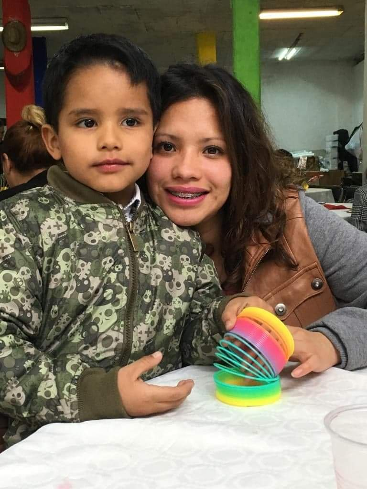
Momentos de la vida escolar de nuestra comunidad, en video.
Lo que la comunidad josefina se lleva del Instituto, en palabras de quienes ya egresaron.
Gracias a su excelencia educativa y a sus profesores, el Juventud sembró los valores que rigen mi vida, por eso no dudo hoy en confiarle la educación de mis hijos.
Pertenecer a la comunidad josefina me ha permitido desarrollarme profesional y personalmente. Veo ahora la oportunidad de retribuir al Instituto todo lo que aprendí.
El Juventud representa en mi vida tres factores en especial: aprendizajes, valores y Comunidad, ya que forjó los cimientos de mi persona y mi profesión.
Un Instituto que me formó en valores, principios y amor a mi comunidad, un Instituto que me impulsa a dar lo mejor de mí.
Mi paso por el Instituto Juventud significó vivir experiencias que me dejan muy buenos recuerdos y conocer seres humanos que contribuyeron en mi formación profesional, espiritual y personal.
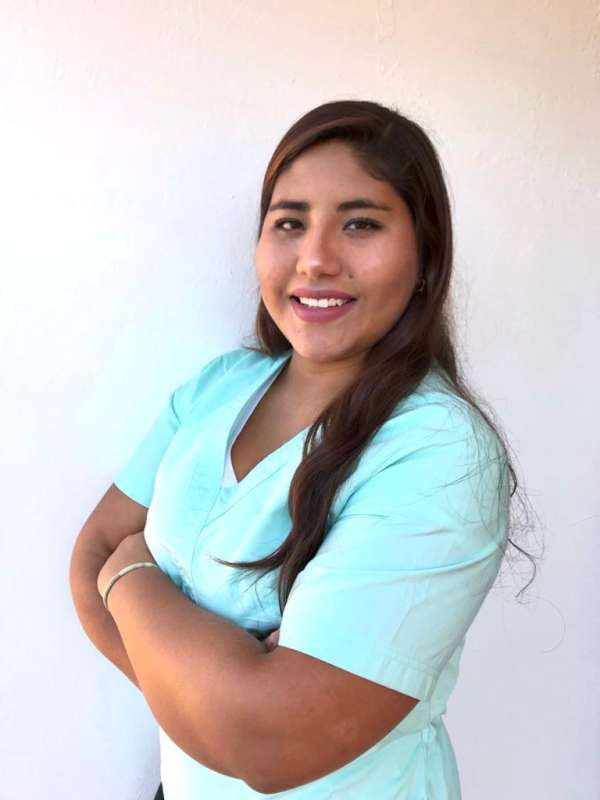
“Alegría y entusiasmo es lo que se vive el en Juventud”
En el juventud aprendí valores y disciplina en un ambiente muy agradable.
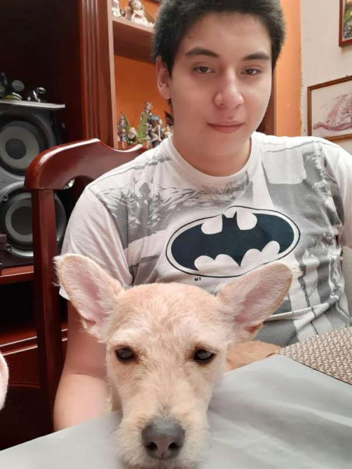
Todo mi reconocimiento y agradecimiento al personal académico y administrativo del Instituto Juventud, quienes con su dedicación y esfuerzo me mostraron el camino a seguir: “hacer siempre y en todo lo mejor”
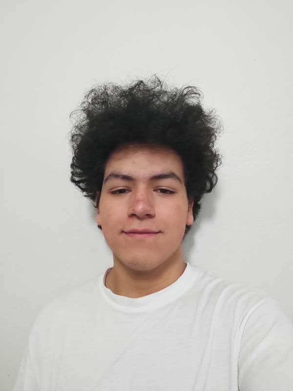
Gracias IJEM por darme la capacidad y conocimiento crítico necesario para convertirme en una ciudadana de bien, capaz de adaptarme al cambio y contribuir a la sociedad.
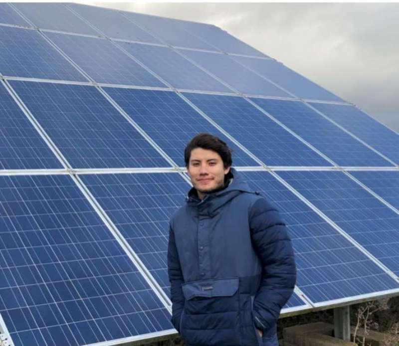
“Gracias al Instituto Juventud, pude conocer a grandes personas, tanto profesores como amigos, que hoy en día considero pilares fundamentales en mi educación y desarrollo como persona”.
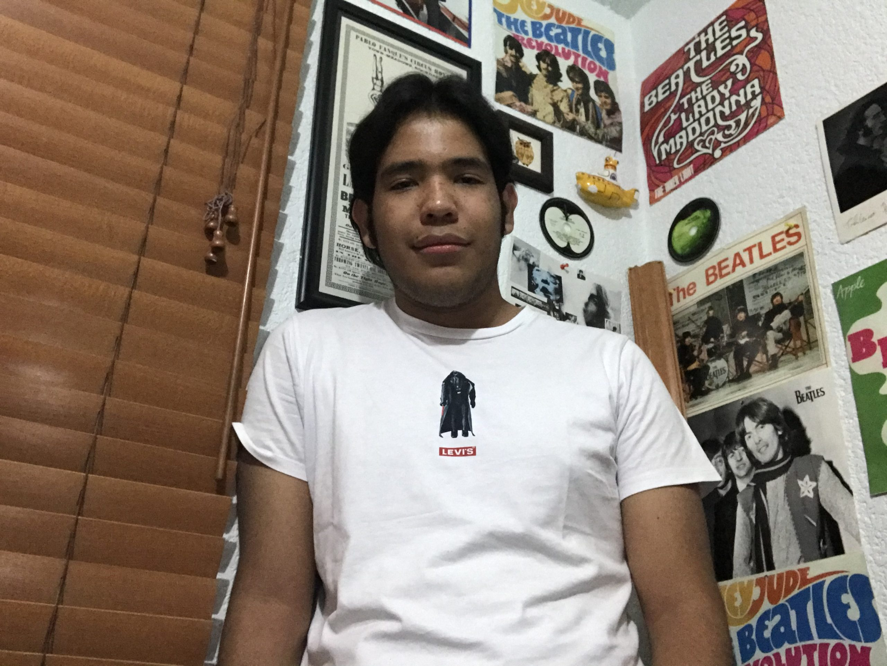
Mi experiencia en el Instituto Juventud: El Juventud para mí, fue muy importante pues los valores que nos inculcaron los aplico en mi vida diaria y me dejo experiencias inolvidables.
“El Juventud me dejó buenas experiencias, valores, enseñanzas y amistades, personalmente valoro mucho que siempre buscan que des la mejor versión de tí mismo”
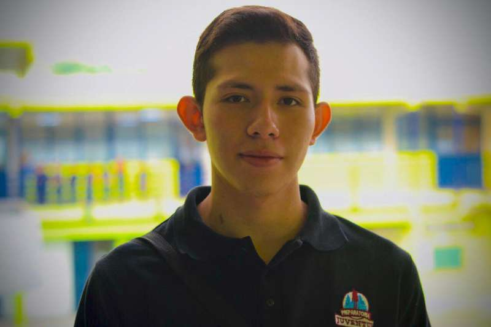
Sin duda algo para recordar con cariño durante toda mi vida, no sólo por los momentos, sino por las personas que conocí en el camino.
El IJEM me enseñó a lograr a partir de esfuerzo, a valorar lo más importante, a predicar con el ejemplo y a hacer siempre y en todo lo mejor. Gracias.
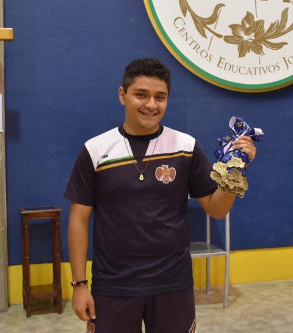
Para mi el IJEM fue sin duda la formación más importante en mi vida, me forjó en los valores de respeto, responsabilidad, amor y más, mismos que ahora me representan como profesional.
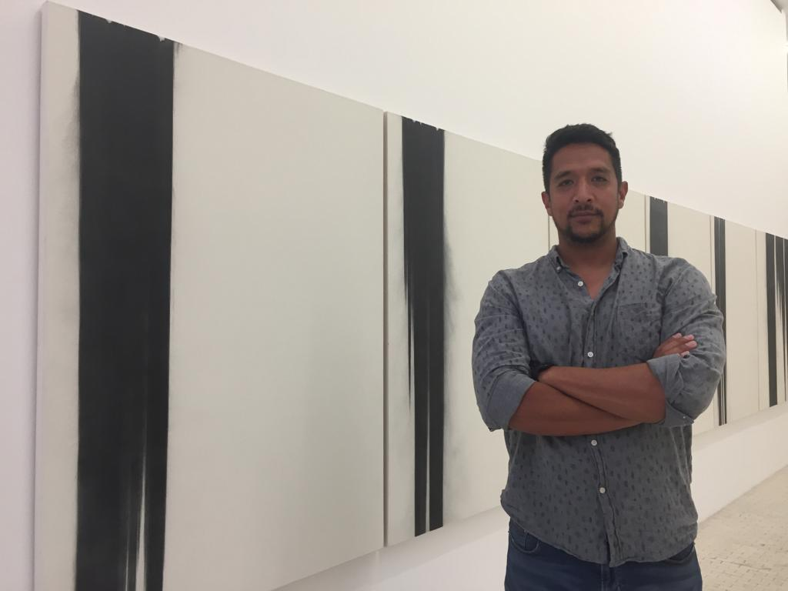
Diversión, amistad y aprendidizaje, son las palabras con las que yo describiría al Juventud.

Para mi el IJEM es la institución que me ayudo a reforzar mi carácter y el lugar en donde hice excelentes amistades de confianza.
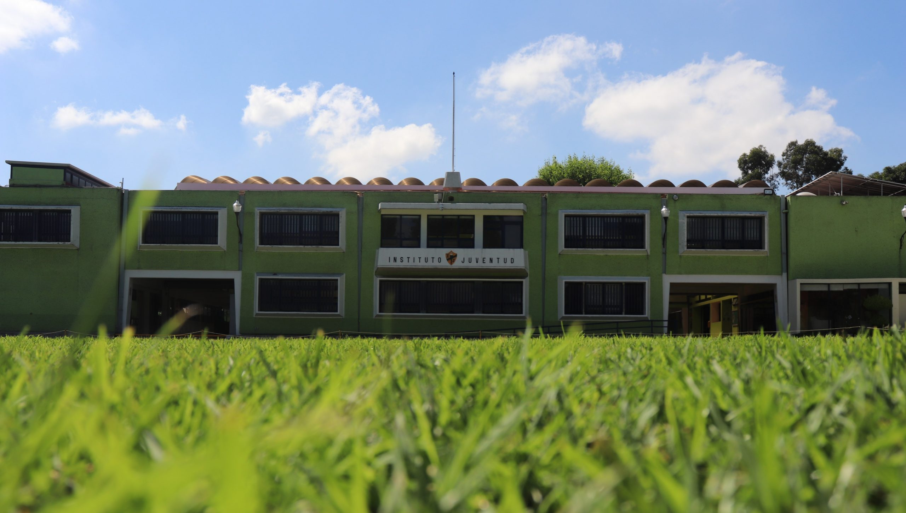
El Juventud me enseñó a ser una persona leal, deportiva, competitiva y a no rendirme nunca pese a las dificultades y eso jamás lo olvidaré.
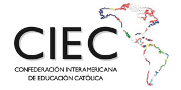
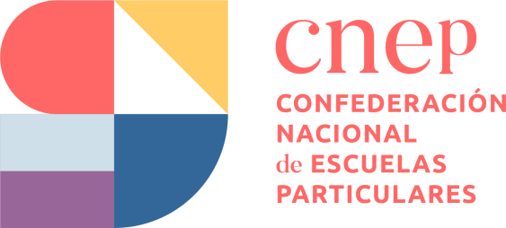